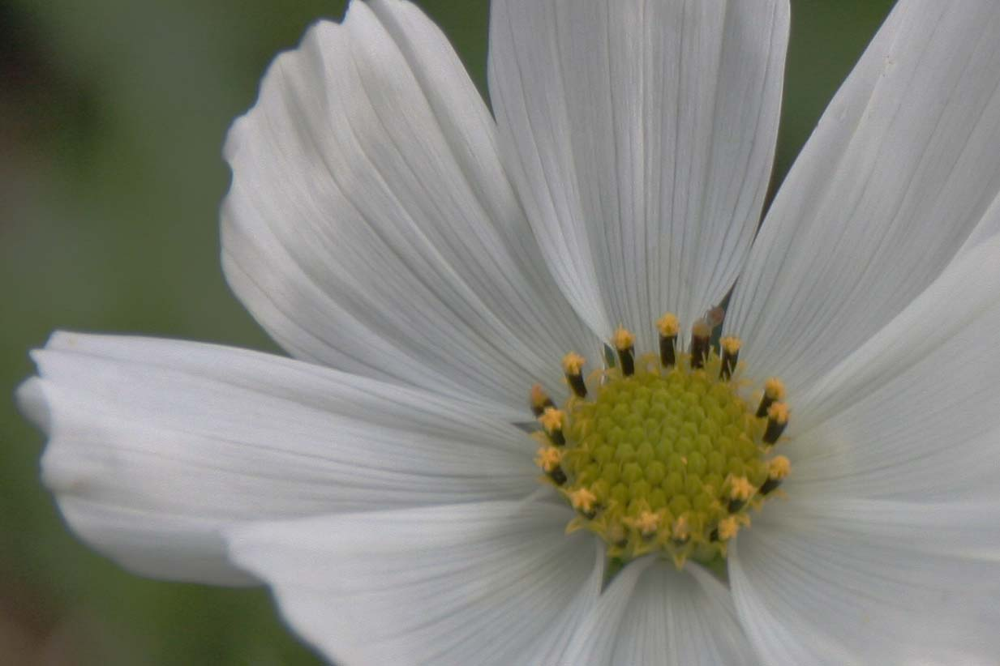

螢火蟲的成長過程？
螢火蟲是一種『完全變態』的昆蟲。
所謂『完全變態』是指一生中個體出現的型態包括「卵」→「幼蟲」→「蛹」→「成蟲」等四個階段。
卵期：圓形，通常淡黃色、白色或粉紅色，卵孵化時間約需20天左右。
幼蟲期：共有六齡，幼蟲期有蛻皮現象。幼蟲身體長而扁平，頭部有明顯的深褐色針狀大顎。胸部有三節，腹部九節，和六隻細長的腳，第八腹節有兩枚發光器，第九腹節有一個如吸盤般的尾足，用來吸附於物體。走起路來一屈一伸的，向尺蠖蛾的幼蟲一般。
蛹期：約七天，體色為淡黃色或白色，屬裸蛹。可以清楚的看見牠的複眼、口器、觸角、足、及各體節等。
成蟲期：黃緣螢生活約十天左右，其它種類的螢火蟲有些較長。成蟲有兩對翅膀，前翅為革質，後翅為膜質，頭部上方有一對觸角和兩個水汪汪的複眼，約佔整個頭部的三分之二，視覺十分敏銳。

|
螢火蟲的綠光？
螢火蟲成蟲藉由腹部的發光器發光，雄蟲二節，雌蟲一節。
有些種類則雌雄均只發兩點光，有些甚至不會發光，所以並不是所有的螢火蟲都會發光哦！
幼蟲則在其腹部第八腹節有兩枚發光器，多數種的螢火蟲蛹也會發光。
而螢火蟲如何發出神秘的綠光？發光的目的又是什麼呢？
原來在螢火蟲腹部末端長有由發光細胞、反射細胞、透明表皮、氣管等組合而成的發光器，其中由螢光素、螢光酵素、三磷酸和氧作用，產生複雜的氧化還原反應，而產生亮光。
光由反射細胞反射，經由透明的表皮透射出來，而這樣的綠光其發光效率極高，只有2~10％的能量轉變為熱能，其餘能量均用來發光，稱之為「冷光」，也就說明了螢火蟲的光是不燙人的哦！
每種螢火蟲發光的顏色與頻率都不同，如台灣窗螢發著持續的黃綠色光，而黃緣螢則是發閃爍的黃色光。
螢火蟲的光閃爍著特定的節奏，是螢火蟲用來交換彼此訊息的語言，也是雄蟲利用亮光，找尋雌蟲達成交尾的工具。
此外，螢火蟲的發光行為還有誘集、警戒、對捕食者的恫嚇、照明、偽裝及族群調節等目的。
|
螢火蟲的種類？
全世界己記載的螢火蟲種類約有2000種，台灣大約有56種。依照螢火蟲幼蟲生活的環境，將螢火蟲分為三大類：
水生螢火蟲：幼蟲多生活在終年有水，水質清澈的山間小水澗，或底層為泥漿的水田裡。如黃緣螢．黃胸黑翅螢及條背螢。
半水生螢火蟲：幼蟲在清澈溪水所流過的潮濕駁坎或岩壁上棲息。紅翅螢的幼蟲是唯一的半水生螢火蟲，幼蟲有群居現象，有時會有數百隻共同生活在潮濕岩壁上。
陸生螢火蟲：幼蟲棲息在陰涼、地面略微濕、山區的落葉間或小草上，有些則生活在開闊草地上。大部分螢火蟲都是陸生，包括：臺灣窗螢、紅胸黑翅螢、紋螢、橙螢、擬紋螢、梭德氏脈翅螢、黑翅螢等。

|
螢火蟲的季節？
一般我們所稱的螢火蟲是指成蟲期，台灣現有的螢火蟲一年中，大約有三季成群出現時段：
第一季：3月下旬到6月下旬，多在平地到低海拔山區出現螢火蟲成蟲，如黑翅螢、黃胸黑翅螢、紅胸黑翅螢、小紅胸黑翅螢、紋螢、擬紋螢、大端黑螢、梭德氏脈翅螢、端黑螢、紅胸窗螢、黃緣螢、條背螢、赤腹窗螢、赤腹櫛角螢等。這一季出現的螢火蟲種類最多，也最壯觀。
第二季：7月初到8月底，出現的螢火蟲種類不多，以條背螢、黃緣螢、邊褐端黑螢、臺灣窗螢為主。
第三季：10月中旬到12月底，當水生螢火蟲如黃緣螢、條背螢逐漸減少後，接續出現的是中、低海拔山區的螢火蟲，像山窗螢、橙螢、雲南扁螢、雙色垂鬚螢，之後則是中、高海拔山區的螢火蟲，如黃緣短角窗螢、鋸角雪螢、雪螢、灰翅雪螢及神木螢等。
|
螢火蟲的食物？
成蟲的螢火蟲因為口器已經退化得很小，只吸食露水或花蜜以保持體內水份。
而在成蟲期間所消耗的絕大部份養份，都是靠幼蟲時期所儲存。
而幼蟲吃什麼呢？幼蟲以蝸牛及蚯蚓為主要食物。
有些種類只吃蝸牛，例如窗螢屬及部份短角窗螢屬的種類，像山窗螢、蓬萊短角窗螢等都是。
有些種類只吃蚯蚓，例如雙色垂鬚螢等。
有些則來者不拒，不僅蝸牛、蚯蚓都吃，甚至連同種之間都會互相攻擊，像黑翅螢、端黑螢還有雲南扁螢等。幼蟲在捕食時，會先以像鎌刀狀的大顎咬住獵物，然後立即注射麻醉劑使獵物麻痺癱瘓，再以消化劑溶解獵物，最後以吸食的方式將獵物的肉汁吸食乾淨。
|